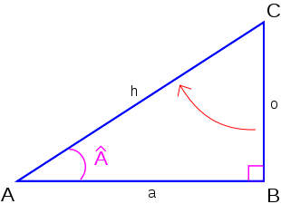

Voici quelques conseils pour vous guider dans la résolution de tels problèmes :
- il convient d’abord de bien comprendre le problème posé ; assurez-vous qu’il est parfaitement
spécifié ;
- résolvez le problème via quelques exemples précis ;
- mettez en évidence les variables « données », les variables « résultats » et les variables de travail ;
- n’hésitez pas à faire une ébauche de résolution en français avant d’élaborer l’algorithme
définitif pseudo-codé ;
- déclarez ensuite les variables (et leur type) qui interviennent dans chaque algorithme
; les noms des variables risquant de ne pas être suffisamment explicites.
- Écrivez la partie algorithmique AVANT de vous lancer dans la programmation en Java.
Écrivez les algorithmes et codez les programmes Java correspondant qui
- échange le contenu de deux variables entières passées en paramètres.
- retourne le maximum de 4 nombres donnés en paramètre en utilisant
les algorithmes
max2 et/ou max3 déjà développés dans ce chapitre.
- valide une date donnée par trois entiers : l’année, le mois et le jour.
sinus
Dans un triangle rectangle,
- le carré de l’hypoténuse (h) est calculé par la somme des carrés des 2 autres côtés.
- le sinus  est donné par le côté opposé (o) divisé par l’hypoténuse (h).

Écrivez un algorithme qui reçoit les valeurs (dans l’ordre) du côté opposé (o) et
adjacent (a) d'un triangle rectangle et qui retourne le sinus de l'angle  de ce triangle
rectangle.